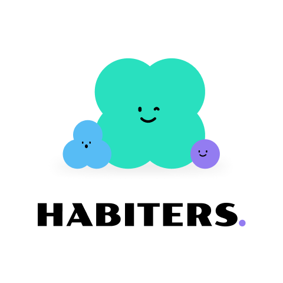

사이드 프로젝트2023
Habiters
해커톤에서 시작해 공개 배포까지 이어간 습관 형성 서비스
10일 해커톤이 끝난 뒤에도 개발을 이어가 서비스를 공개 배포했습니다.
인증과 습관 관리, 일일 실천 기록 API를 담당했습니다.
배포 후에는 Logback으로 서버 로그를 남기고, 테스트와 Spring REST Docs를 연결해 API 검증과 문서 관리를 개선했습니다.
백엔드 개발자
Java와 Spring Boot로 서비스 백엔드를 개발합니다.
B2B 물류 플랫폼에서는 기획부터 서비스 및 관리자 API 개발, 배포와 운영까지 맡았습니다.
IoT 프로젝트에서는 센서 데이터를 수집하는 TCP 서버와 모니터링 API를 개발했습니다.
선적과 고객 화물을 관리하고 운송 일정 / 문서를 공유하는 B2B 물류 플랫폼.
초기 기획부터 서비스 및 관리자 API와 배포 및 운영까지 담당했습니다.
센서 데이터를 수집하는 TCP 서버와 모니터링 API.
공통 수집 구조 개발, 센서 조회 성능 개선과 가상 게이트웨이 부하 검증을 수행했습니다.
LG전자 / TV OS 관리 플랫폼
VisualVM으로 응답 불가 문제를 조사하고 10,000건 단위 분할 조회와 SXSSFWorkbook을 적용해 운영 데이터의 파일 생성을 완료했습니다.
생성 요청은 큐에서 한 건씩 처리했습니다.
KooRoo / API 서버 운영
Prometheus / Grafana / Uptime Kuma로 모니터링을 구성했습니다.
약 100개 계정의 JMeter 시험에서 동시 로그인 오류를 재현해 전달하고, S3 오류 로그의 일일 메일 발송을 자동화했습니다.

해커톤에서 시작해 공개 배포까지 이어간 습관 형성 서비스
10일 해커톤이 끝난 뒤에도 개발을 이어가 서비스를 공개 배포했습니다.
인증과 습관 관리, 일일 실천 기록 API를 담당했습니다.
배포 후에는 Logback으로 서버 로그를 남기고, 테스트와 Spring REST Docs를 연결해 API 검증과 문서 관리를 개선했습니다.
기획자의 API 연동 질문에서 시작한 사내 세미나
바이브 코딩으로 서비스를 만들던 기획자가 외부 API를 연결하는 방법을 궁금해해 발표를 준비했습니다.
공식 문서에서 확인할 정보와 실제 구현할 작업을 구분하고, HTTP 요청과 응답부터 인증정보 관리까지 설명했습니다.
AI와 함께 공공데이터를 조회하고 웹 화면에 연결하는 실습 절차도 구성했습니다.
서비스의 인증 흐름과 접근권한 정책을 팀에 공유
WECARGO에서 JWT 기반 인증과 인가를 어떻게 구성할지 발표했습니다.
로그인과 토큰 검증, 회원 상태와 역할에 따른 접근권한 확인 흐름을 정리했습니다.
토큰 갱신과 로그아웃 정책을 제안하고, 프론트엔드와 백엔드가 각각 처리할 동작을 공유했습니다.